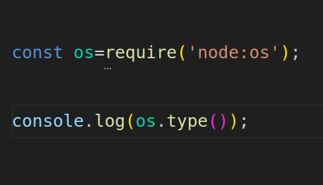
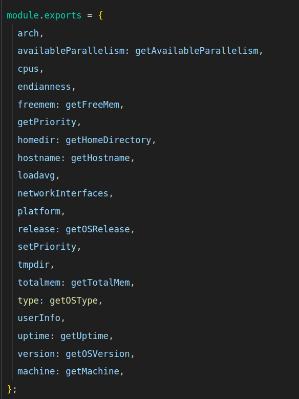
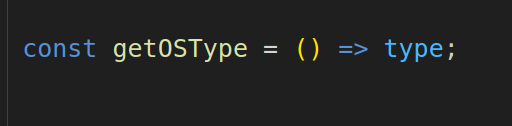
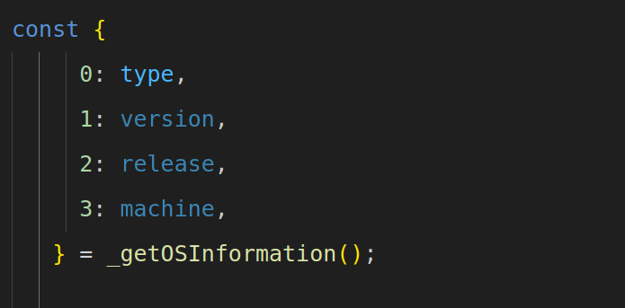
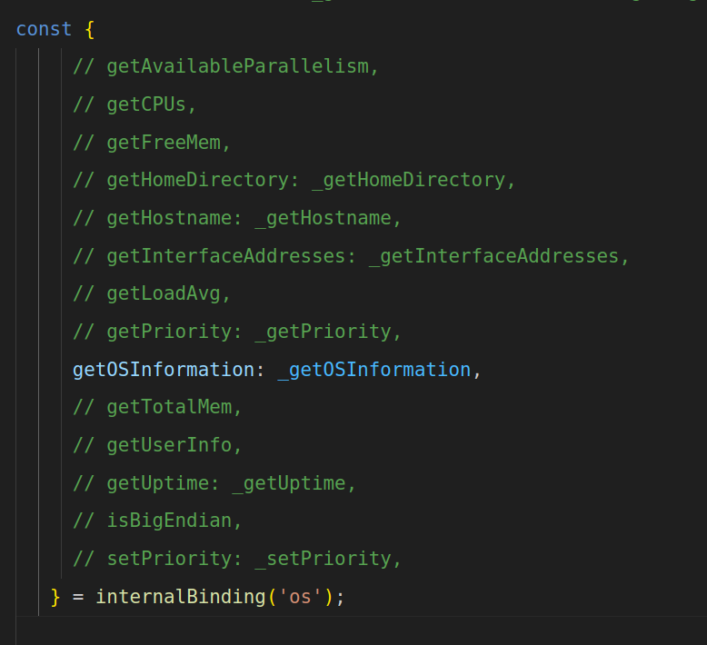
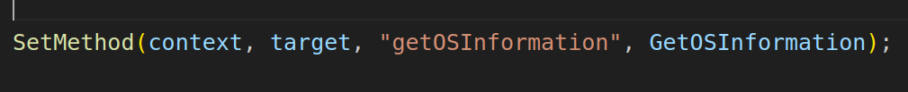
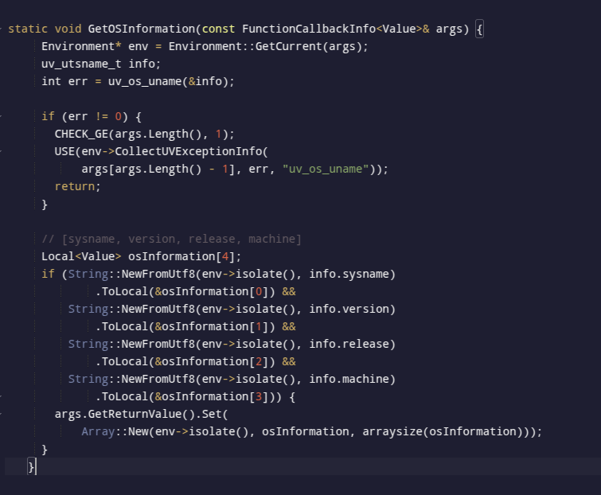
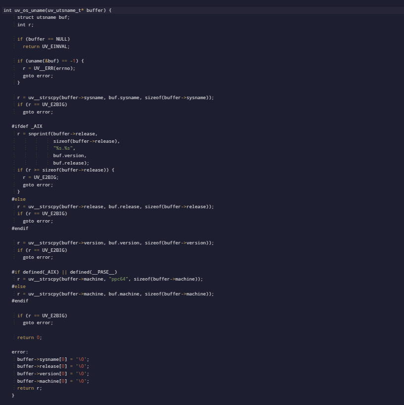
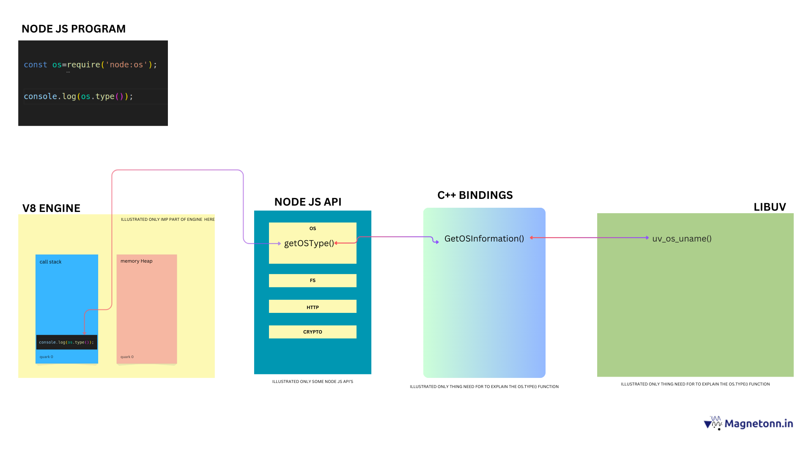

Node.js: How It Works and Understanding Its Core Workflow.
The main aim of this blog is to give you a brief overview of how Node.js works and how you can understand its workflow on your own.
In this post, I will explore how a higher-level call in Node.js interacts with lower system-level operations and executes tasks. I will briefly touch on key components like the V8 engine, libuv, and the Node.js runtime. This is just an introduction—I will dive deeper into these topics in a future blog post. For now, my focus is on explaining how Node.js operates at a lower level.
Here we can take os.type() function as a example to understand node's internal workflow
Before diving into the Node.js workflow, let's first understand the Node.js runtime environment in a simple and concise way.
The Node.js runtime primarily consists of three main components: the V8 engine, Node.js API bindings, and libuv.
V8 engine: This is written in C++ and is responsible for executing JavaScript code.
Node.js API bindings: These are implemented using a combination of JavaScript and C++, allowing interaction between JavaScript and lower-level system operations.
Libuv: This library, written in C, handles asynchronous I/O operations and provides the event loop and thread pool that power Node.js's non-blocking behavior.
V8 Engine
V8 is Google’s open-source JavaScript engine that powers both Node.js and Google Chrome. It compiles JavaScript into machine code, enabling fast and efficient execution.
Key Features of V8:
JIT Compilation (Just-In-Time): Converts JavaScript to machine code for faster performance.
Garbage Collection: Manages memory automatically by reclaiming unused resources.
Optimized JavaScript Execution: Provides efficient handling of modern JavaScript features.
Coming to Libuv part
What is libuv?
libuv is a multi-platform support library written in C that handles asynchronous I/O operations in Node.js. It enables non-blocking behavior by managing tasks in the background through the event loop and thread pool.
Some of key Functions of libuv includes:
File system operations (e.g., read, write)
Networking (e.g., TCP/UDP sockets)
Timers (e.g: setTimeout, setInterval)
Child process management
DNS resolution
Thread pooling
Although JavaScript is single-threaded, libuv allows Node.js to handle multiple concurrent tasks efficiently by offloading them to the system’s background.
You may encounter questions like: "How is Node.js single-threaded yet non-blocking?" it is because of libuv
Node.js API
The Node.js API provides an interface to interact with system-level resources like the file system, network, and operating system processes. It is built on top of V8 Engine , libuv
Overall node js runtime diagram

( source: internet)
"So, coming to the content, if I encounter a function or program like this how can you understand what's node do underthehood?”

How does it really work under the hood?
You might wonder why we need the require function for modules like os, but not for built-in methods like console. I'll explain that in another post.
For now, let's focus on how the top layer of JavaScript in Node.js interacts with system-level information.
Understanding Node.js APIs and How They Access System-Level Data
Node.js APIs like fs (file system), os (operating system), and others are exposed to JavaScript, but they rely on C++ bindings to perform low-level tasks. These APIs act as a bridge between the JavaScript environment and the underlying system.
JavaScript APIs (like fs, os, etc.) are located in the lib folder it is purely written in javascript.
C++ Core (which interacts with system-level resources) is located in the src folder.
The os module we used here is a example of Node.js API.
This is the code base of node js Source code
Node.js APIs are located in the lib folder inside node repo , and if you navigate to it, you'll find a file called os.js
This is the os.js file. inside it will have the type() function which we called in programme.To find the type() function, we can search within the file using Ctrl + F and look for the keyword 'type'. Upon doing so, we encounter the function.
From examining the codebase, we found that the type() function is implemented by calling the getOSType function. This is defined in the module.exports object as follows

So, we found that the type() function in the codebase is mapped to the getOSType function. Upon inspecting the getOSType function in the file, we encountered the following code:

Upon searching the codebase again, we encountered the following code snippet:

We found that the type value comes from the _getOSInformation()
Here, the type value is extracted from the result of _getOSInformation()
From this, we searched the codebase further and found the following object, which reveals that _getOSInformation() is imported from the internal bindings

(note: i just commented other to focus on the _getOSInformation() )
In the internalBinding('os') object, the JavaScript getOSInformation method is mapped to the C++ function _getOSInformation. This connection allows Node.js to access low-level system information by bridging between JavaScript and the C++ implementation.
This indicates that _getOSInformation() is accessed through internalBinding('os'), which connects to the C++ side of Node.js
To trace the C++ implementation, we navigate to the src folder where Node.js' core bindings are located. In this case, we look for node_os.cc, as .cc files typically contain the main logic. There may also be corresponding .h (header) files that define function declarations.
Pro Tip:
Whenever internal bindings are called in Node.js, they typically invoke C++ functions to access low-level system operations. These bindings act as a bridge between JavaScript and system-level APIs. To understand how a particular module works, you can explore the src directory in the Node.js codebase. For instance, OS-related functionality is usually handled in the node_os.cc file, while file system operations are implemented in node_fs.cc. This naming pattern applies mostly to other core modules as well. By tracing these files, you can see how Node.js interacts with the underlying system through libuv and C++ bindings, offering insight into its internal workflow.
ie in short
For OS-related operations, check the node_os.cc file.
For File System (fs) operations, check the node_fs.cc file
Follow a similar pattern for other modules by searching the src directory for corresponding files.
This approach helps trace how Node.js interacts with the underlying system via libuv and C++ bindings.
Go to the node_os.cc file and search for getOSInformation
From there, we encounter the code:

by further searching we got the matching
This indicates that the getOSInformation method in JavaScript is mapped to the GetOSInformation function in C++.
From this, we understand that getOSInformation in JavaScript is defined and linked to the GetOSInformation function in this C++ file. code base is given below

Here, uv_os_uname is the libuv function responsible for OS-related functionality. By researching, I found that its implementation is located in the core.c file within the libuv src directory.
Libuv is an external library and not a part of Node.js core. Its source code can be found in the official GitHub repository.
The source code of libuv Libuv
The provided code for the uv_os_uname function in libuv is responsible for retrieving system information such as the OS name, release version, and machine architecture

It is the low-level system program implemented with the help of libuv.
For Windows and Unix, different libuv functions are used due to architectural differences. These functions are found in the libuv/src directory, which contains separate folders for Windows and Unix. When the C++ code calls a function, it is routed to the appropriate folder based on the operating system
I don't force you to understand every single line of code, but rather to grasp how these work in Node.js from a deeper perspective. Focus on understanding the mechanism of these modules with respect to Node.js, Node APIs, and libuv, as explained above.
So, I have explained how you can explore the real Node.js codebase. It may feel challenging at first, but with some effort and practice, you can navigate and understand it easily
Hold on—I will create a concise diagram and a summary section that you can refer to after going through these concepts.
Concise diagram and Summary section

(download and view || try to view image in new tab for better understanding)
1.The Node.js runtime starts executing the script
2.The require('node:os') statement is pushed onto the call stack. Node.js identifies it as a core module and loads the os module without searching in external files.
3.The console.log(os.type()) statement is pushed onto the call stack. Node.js detects the os.type() method call and delegates it to the node OS API.
4.Node.js identifies that os.type() refers to the getOSType function within the os module.
5.The getOSType function in JavaScript retrieves the OS type by calling _getOSInformation() internally.
6._getOSInformation() is imported from internal bindings, which connect JavaScript code to C++ functions.
7.The JavaScript call to _getOSInformation() is mapped to the GetOSInformation() function in the Node.js C++ codebase.
8.The GetOSInformation() function interacts with the libuv library to retrieve OS-level information.
9.GetOSInformation() calls uv_os_uname() from the libuv library.
10.The uv_os_uname() function gathers OS-level data and returns it to the GetOSInformation() function.
11.This information is passed back from the C++ layer to the JavaScript layer.
12.The OS type (e.g., "Linux", "Windows_NT", "Darwin") is returned to the call stack and printed using console.log().
13.Once the output is displayed, the call stack is cleared, and the program exits
"Hope you enjoyed! Thank you for reading, and happy learning. If you have any doubts, feel free to email me at me@magnetonn.in."
(download and view || try to view image in new tab for better understanding)